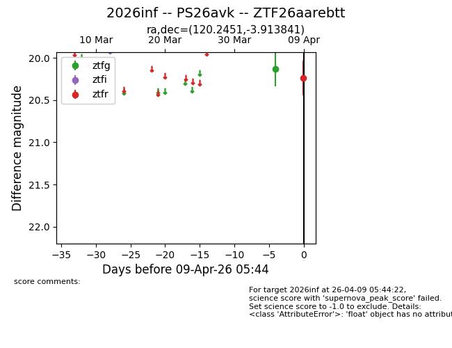
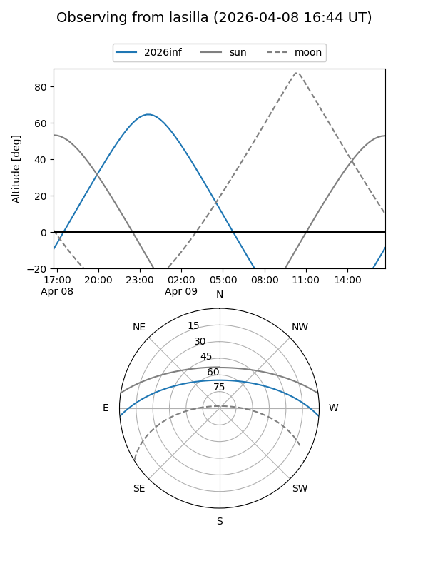
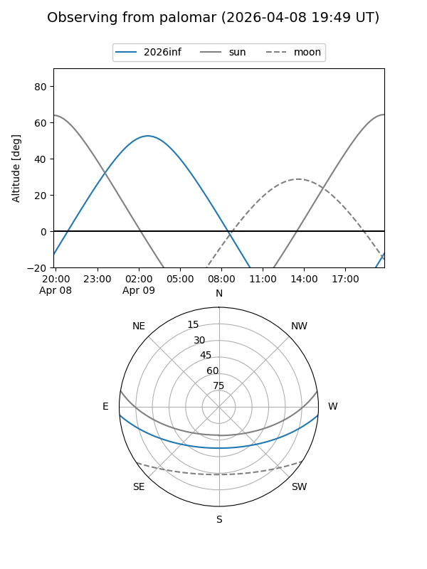
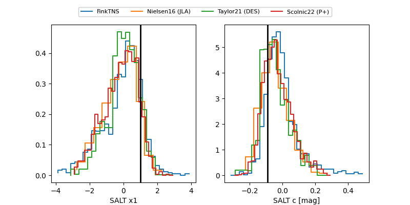

2026inf
Target 2026inf at 2026-04-09 05:55
Aliases and brokers:
FINK: link
Lasair: link
ALeRCE: link
TNS: link
YSE: link
alt names
ZTF26aarebtt (ztf,fink_ztf)
2026inf (tns,yse)
PS26avk (panstarrs)
Coordinates:
equatorial (ra, dec) = 120.2451,-3.91384
equatorial (HMS+DMS) = 08:00:58.81,-03:54:49.83
galactic (l, b) = (224.6036,+13.54359)
Flags:
Photometry:
last ztfg=20.13, ztfr=20.24
1 ztfg, 1 ztfr detections
Lightcurve

Visibility


Additional plots
